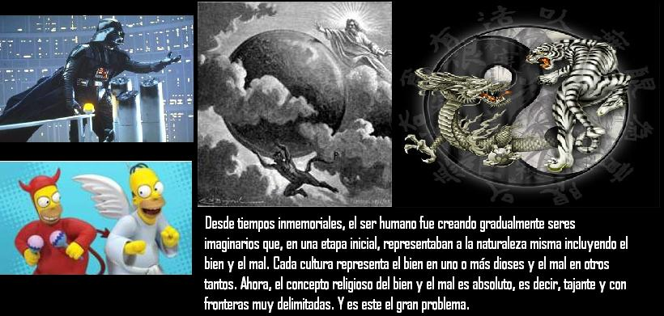

Originalmente publicado en naturalezaracionalismo.blogspot.com
Desde que nacemos, escuchamos y aprendemos diferentes términos que se convierten en cotidianos y cuyo uso se presta para diferentes situaciones. Dos de esos términos son el bien y el mal. Normalmente utilizamos estas dos palabras como si tuvieran vida propia. Para “el bien” existe una personificación muy difundida en el mundo: Dios. Por otro lado, “el mal” es personificado por Satanás. ¿Pero acaso estas dos palabras quieren decir en verdad que existe una polarización notable y real plasmada en dos personajes contrarios como lo son Dios y Satanás?
Usualmente si algo bueno sucede o consideramos alguna acción como digna de ser calificada como buena, automáticamente es atribuida a Dios. Y lo mismo para la asociación del mal con Satanás. Pero esto no constituye más que una abstracción necesaria para muchos en el sentido que permite separar unas acciones de otras.
El problema es que cuando se agrupan los conceptos mediante sistemas artificiales y, en este caso, muy subjetivos, se corre el riesgo de sesgar los diferentes hechos naturales y sociales, logrando únicamente una peligrosa confusión.
Desde tiempos inmemoriales, el ser humano fue creando gradualmente seres imaginarios que, en una etapa inicial, representaban a la naturaleza misma, y posteriormente otros seres que cubrían necesidades y aplacaban temores. Con esto, fueron atribuyéndose poco a poco características y comportamientos humanos a estos seres. En una tercera etapa, estos seres fueron utilizados para manejar grandes masas de gente, es decir, con fines políticos y de poder.
Pero, evidentemente, cada nueva etapa mantuvo casi intactas las características de las etapas anteriores, y esto se hace evidente cuando vemos cuál es el concepto de Dios o Satanás en la actualidad: seres que de maneras distintas pero complementarias, han sido y son utilizados para mantener un orden general entre las naciones y en los círculos sociales reducidos; seres que dan consuelo o proveen castigo eterno; seres que representan aún a la naturaleza misma, ya que pueden ser encontrados y asociados con cualquier cosa o ser vivo existente en nuestro planeta. Pero, como Dios es el que representa el bien, tenía que existir una contraparte: Satanás.
Y este patrón lo podemos ver en diferentes culturas a lo largo de la historia humana. Cada cultura representa el bien en uno o más dioses y el mal en otros tantos. Ahora, el concepto religioso del bien y el mal es absoluto, es decir, tajante y con fronteras muy delimitadas. Y es este el gran problema.
El concepto religioso define el bien como las cosas que ha mandado Dios que hagamos, y el mal como las que no. Todo esto se basa principalmente en libros como la Biblia, el Corán y otros.
Claro, decir que amar a los padres es bueno, es algo que nadie puede negar. Y lo dice en la Biblia. Pero, aprobar la esclavitud o la venganza es algo que se considera universalmente como algo malo. Sin embargo, el Dios de la Biblia ordena estas dos cosas. Como podemos ver, la concepción religiosa del bien y el mal es muy subjetiva y altamente contradictoria.
Por otro lado, el bien y el mal se pueden analizar mejor desde un punto de vista de que la moral es un producto de la evolución del comportamiento humano: normas consensuadas que permiten un mayor beneficio y menor perjuicio a cada individuo que vive en una sociedad dada.

El bien y el mal son conceptos relativos y percibidos como tales (es decir, como bien o como mal) según la óptica de cada grupo cultural o social.
Si una persona hace daño a otra está mal, porque consensualmente ha sido determinado así, pero no quiere decir en lo absoluto que dicha persona ha sido movida por algún ente maligno portador de todo el mal existente.
El bien y el mal no son algo palpable ni algo que exista como tal. Son sólo conceptos relativos y que solo tienen sentido bajo el razonamiento humano. Son abstracciones creadas para clasificar formas de comportamiento o causas de este. Son conceptos tan relativos como el frío o el calor, o lo claro o lo oscuro.
Lo que debemos dejar de hacer es pensar que el que hace el bien está guiado por algún ente portador de todo el bien del mundo, y el que hace el mal lo está por algún ente portador de todo el mal. Esta actitud sólo genera odios, discriminación y más ignorancia de la que ya existe en este mundo.
Volver a la sección Examinando las religiones
Comentarios
Comments powered by Disqus